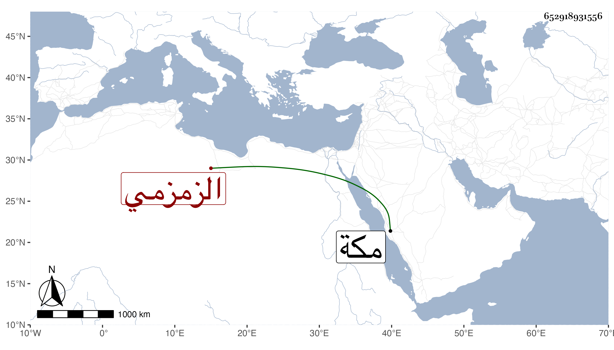

0902Sakhawi.DawLamic.ITO20230111-ara1.EIS1600.652918931556
Biography ID: 652918931556
959
إسماعيل من نابت بن إسماعيل بن علي بن محمد بن داود مجد الدين الزمزمي الآتي أبوه الماضي جده . قرأ المنهاج والألفية وعرض وحضر عند القاضي محيي الدين المالكي في العربية واشتغل في الفقه وغيره وقرأ البخاري وسمع علي يسيرا ، وهو أحد المباشرين للأذان وسقاية العباس . مات في أواخر ذي القعدة سنة ثمان وتسعين بمكة .
